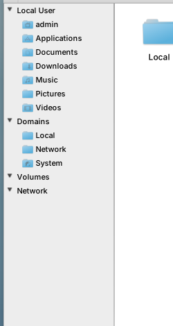
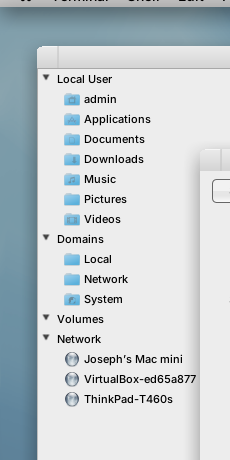
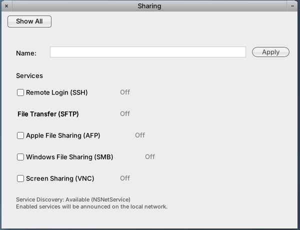

Why the Workspace File Viewer's Network list is empty on NextBSD, and the Mach-IPC fix that lights it up. Drop the AF_UNIX socket transport; finish the dns_sd client protocol over the com.apple.mDNSResponder Mach service — the Apple way.
The File Viewer's Network node and the standalone NetworkBrowser app both browse mDNS via GNUstep NSNetServiceBrowser, which calls libdns_sd underneath. On NextBSD that browse silently returns nothing — the Network list is empty — while a Debian box on the same LAN lists ThinkPad-T460s, Joseph's Mac mini, and VirtualBox-ed65a877.
Root cause: the mDNSResponder daemon advertises its own .local name over multicast (so peers see it), but there is no working client request/response transport. The installed libdns_sd is the pure AF_UNIX client stub that connects to /var/run/mDNSResponder — a socket that is never created (the daemon drops to nobody against root-owned /var/run). The intended Mach transport (mach_bridge.c + a dns_sd.defs MIG IDL) was scoped but never implemented: the daemon claims the com.apple.mDNSResponder Mach service and never reads a message from it.
Fix, per the “Mach not sockets” doctrine: implement the dns_sd wire protocol over Mach on both ends — a MIG-served Mach receive loop in the daemon (wired through EVFILT_MACHPORT, per #168) and a Mach transport in libdns_sd's client stub. The UI needs zero changes. Almost all the work is one repo: nextbsd-redux/nextbsd.
On the live NextBSD machine (root@thinkpad-t460s, display :0, user admin), GWorkspace's File Viewer shows the sidebar tree Local User / Domains / Volumes / Network. The Network section is expanded but empty. The Sharing preference pane lists every service (SSH, SFTP, AFP, SMB, VNC) as Off.
For comparison, admin@debian on the same LAN shows a populated Network section. Same File Viewer, same sidebar tree (Local User / Domains / Volumes / Network) — only the Network node differs:


| Host | NextBSD (ThinkPad-T460s) | Debian (reference) |
|---|---|---|
| Network sidebar | empty | Joseph's Mac mini, VirtualBox-ed65a877, ThinkPad-T460s |
| Advertises self via mDNS | yes — peers see ThinkPad-T460s | yes |
| Can browse / discover peers | no | yes |
The asymmetry is the key clue: NextBSD advertises (Debian sees it) but cannot browse. Advertisement is the multicast engine talking to the wire; browse requires a client API call into the daemon — and that path is broken.
Both UI consumers are platform-agnostic and converge on a single transport that lives below Gershwin, inside GNUstep-base's NSNetService → libdns_sd linkage:
Confirmed in source: the File Viewer's NetworkServiceManager is declared <NSNetServiceBrowserDelegate, NSNetServiceDelegate> and gates on NSClassFromString(@"NSNetServiceBrowser"); its /Network node is a synthetic NetworkFSNode whose children come straight from [[NetworkServiceManager sharedManager] allServices] — no SMB browse, no autofs, no pre-mounted filesystem. The standalone NetworkBrowser.app uses the same NSNetServiceBrowser API independently. Same backend, same transport. Fix the transport once and both light up.
Two compounding defects, both verified by reading the port at nextbsd-redux/nextbsd src/mDNSResponder/ and probing the running daemon.
dns_sd transport exists on either sidemach_bridge.c is a bare skeleton. mDNSResponderMachBridgeInit() does a single bootstrap_check_in(bootstrap_port, "com.apple.mDNSResponder", &svc), logs MDNS-BOOT-OK, and discards the receive right. No mach_msg receive loop, no MIG demux. Its own header admits iter‑3 (“Apple-shape dns_sd.defs MIG IDL”) was never done. No .defs file exists anywhere in the tree.libdns_sd is built from mDNSShared/dnssd_clientstub.c — the cross-platform AF_UNIX variant. dnssd_ipc.h takes the AF_LOCAL branch (USE_TCP_LOOPBACK undefined, no Mach define), so ConnectToServer does socket()/connect() to /var/run/mDNSResponder and deliver_request uses sendmsg. Zero Mach symbols in the shipped .so (no bootstrap_look_up, no mach_msg).MainLoop / mDNSPosixRunEventLoopOnce is kqueue/select over FDs only. The claimed Mach port is never added to any event source.udsserver_init binds /var/run/mDNSResponder — but the daemon then drops to nobody, and /var/run is root-owned, so the socket never appears (and the running daemon holds only UDP/route sockets, no UNIX stream listener).com.apple.mDNSResponder.plist declares MachServices but has no Sockets key, so launchd never vends a properly-owned socket either.DNSServiceBrowse fails with kDNSServiceErr_ServiceNotRunning → the Network list stays empty. Multicast advertisement is independent of this path, which is why peers still see ThinkPad-T460s.dns_sd client protocol, and NextBSD is going Mach-native. Finish the Mach transport and retire (or demote to a disabled fallback) the AF_UNIX path. This aligns with the existing EVFILT_MACHPORT native migration (#168) doctrine.
The fix is overwhelmingly concentrated in one repo. Mapping each source tree to its GitHub home:
| Repo | Org | What changes | Scope |
|---|---|---|---|
nextbsdprimary |
nextbsd-redux | The whole transport fix: new dns_sd.defs MIG IDL; real Mach server in mach_bridge.c; wire the Mach port into the event loop via EVFILT_MACHPORT; add a Mach transport to libdns_sd's client stub; MIG codegen + link flags in both Makefiles; update com.apple.mDNSResponder.plist. Lives under src/mDNSResponder/ and overlays/System/Library/LaunchDaemons/. (Active branch today: mdns-device-info.) |
Heavy |
gershwin-componentsfollow-on |
gershwin-desktop | Nothing for the Network list. Separate follow-on only: the Sharing pane's sharing-helper.c uses FreeBSD sysrc/service/rc.conf for hostname-set and service status/start-stop — needs a launchd-native shim. (Branch: feat/nextbsd.) See §8. |
Medium (independent) |
gershwin-workspaceno change |
gershwin-desktop | None. The File Viewer's /Network node (NetworkServiceManager / NetworkFSNode) is correct as written — it just needs the transport beneath it to work. (Source ships in developer-display-server.tar.gz.) |
None |
| GNUstep base rebuild/relink |
gnustep | Likely no source change — NSNetService links libdns_sd at the .so level. If the new Mach client stub keeps the libdns_sd ABI, a rebuilt libdns_sd.so drops in. Verify the NSNetService run-loop integration still works once DNSServiceRefSockFD is replaced by a Mach reply port (see §6). |
Verify only |
nextbsd-freebsd-compatn/a |
nextbsd-redux | None expected. srclist only references mDNSResponder in a comment; packaging of the daemon/lib is driven from the nextbsd build, not the compat srclist. |
None |
nextbsd-redux/nextbsd even though a follow-on touches gershwin-components. Cross-repo PRs won't auto-close it; close manually.
nextbsd-redux/nextbsd)dns_sd.defs (or revive Apple's DNSServiceDiscovery.defs) defining the request routines (browse / register / resolve / queryrecord / enumerate) plus the DNSServiceDiscoveryReply callback subsystem. Generate server (*Server.c) and user (*User.c) stubs with mig.mach_bridge.c — after bootstrap_check_in, keep the receive right and dispatch incoming messages through the generated MIG demux, translating each routine into the existing uds_daemon.c request handlers (handle_browse_request, the request_state machinery) so mDNSCore is driven exactly as the socket path drove it. Replies go back to the client's reply port via the generated DNSServiceDiscoveryReply user stub.EVFILT_MACHPORT source (consistent with #168), rather than a separate mach_msg server thread, so it folds into mDNSPosixRunEventLoopOnce.udsserver_init (or keep behind a build flag, disabled by default). If kept, it must be created by launchd with correct ownership, not bound by the post-drop nobody daemon.libdns_sd, same repo)dnssd_clientstub.c (or a Mach-backed alternate stub). ConnectToServer must bootstrap_look_up("com.apple.mDNSResponder") for the send right instead of socket()/connect(); deliver_request must mach_msg(MACH_SEND) via the generated MIG user stub instead of sendmsg.DNSServiceRef reply receive port. DNSServiceRefSockFD / DNSServiceProcessResult assume a socket FD today; they need a Mach analog (a port that integrates with client run loops, as Apple's classic lib did). This is the piece GNUstep's NSNetService run-loop integration depends on — verify it there.USE_TCP_LOOPBACK switch), e.g. USE_MACH_DNSSD, selecting Mach vs AF_LOCAL at compile time.Makefile and libdns_sd/Makefile: run mig on the .defs; compile the Server stub into the daemon and the User stub into the lib. Mirror how other NextBSD components consume .defs.libdns_sd/Makefile currently links nothing Mach. Add -llaunch (bootstrap) + -lsystem_kernel (mach_msg) and the liblaunch / freebsd-shims includes the daemon Makefile already carries.MachServices already vends the service — confirm lazy MachServices spawn actually delivers the receive right to the daemon (sibling plists for configd/syslogd/notifyd carry notes that lazy MachServices spawn isn't fully wired; verify that gap doesn't also block mDNSResponder). Drop the dead Sockets assumption entirely.gershwin-desktop/gershwin-components)Independent of the browse fix, but part of “hostname, enabled services, etc.” The Sharing pane's mDNS announcement rides the same NSNetService → libdns_sd path, so it starts working the moment the transport is fixed — no Sharing code change for announce. The non-mDNS pieces (hostname + service control) need launchd-native rework.

ThinkPad-T460s.The blank field is not a helper bug: run as the same admin user that owns the pane, sharing-helper get-hostname returns ThinkPad-T460s with exit code 0. So the value is available but never reaches the text field — a UI-layer defect in SharingController (the NSTask output capture / field assignment around the get-hostname call), independent of the platform rework below. The “Service Discovery: Available (NSNetService)” line is also misleading: the class resolves, but the underlying transport is the broken one from §3, so nothing is actually announced or browsed.
| Function | Today (FreeBSD branch) | NextBSD fix |
|---|---|---|
| Hostname display | gethostname() via helper — helper works | UI bug field stays blank; fix SharingController output capture (8a) |
| Hostname set | sysrc hostname= / edits /etc/rc.conf | launchd-native persistence (hostnamed / a scutil-style setter — scutil is absent today), not rc.conf |
| Service status | service <name> status | launchctl query shim |
| Service start/stop | sysrc <name>_enable=YES + service start/stop | launchctl load/enable shim |
| Boot re-announce | systemd unit gershwin-sharing-mdns.service (Linux-only) | LaunchDaemon equivalent, or rely on Sharing UI re-announce on login |
| mDNS announce | NSNetService -publish | fixed by the transport work |
The platform split in sharing-helper.c is the existing PLATFORM_* ladder. The trap: NextBSD compiles as __FreeBSD__, so it silently falls into PLATFORM_FREEBSD — the sysrc/service/rc.conf branch. Two rules follow:
PLATFORM_FREEBSD branch to use launchd — that would break real FreeBSD. The change must be additive: a new PLATFORM_NEXTBSD branch. On every other OS the new code is excluded by the preprocessor, so their behavior is byte-for-byte unchanged.#ifdef __FreeBSD__ cannot tell NextBSD from FreeBSD. Use a discriminator real FreeBSD never matches, checked first in the ladder — a build-injected define set only by the NextBSD build of gershwin-components (the feat/nextbsd branch / NextBSD port):/* checked BEFORE __FreeBSD__ — NextBSD also defines __FreeBSD__ */
#if defined(PLATFORM_NEXTBSD) || defined(NEXTBSD) /* -DNEXTBSD from the NextBSD build only */
# define PLATFORM_NEXTBSD 1
#elif defined(__linux__)
# define PLATFORM_LINUX 1
#elif defined(__FreeBSD__)
# define PLATFORM_FREEBSD 1 /* unchanged — real FreeBSD lands here */
#elif defined(__OpenBSD__)
# define PLATFORM_OPENBSD 1
#elif defined(__NetBSD__)
# define PLATFORM_NETBSD 1
#endifBelt-and-suspenders (recommended): also pick the service-control backend at runtime — prefer launchctl when it is present, else fall back to service/sysrc (FreeBSD/NetBSD) or systemd (Linux). That way even a mis-built binary degrades gracefully and regular OSes are never affected regardless of defines. (A __has_include(<servers/bootstrap.h>) Mach-header probe is an alternative compile-time auto-detect, but the build define is more explicit.)
sharing-helper.c (service + hostname control). The discovery / Network-list fix needs no conditionals in Gershwin at all — it lives entirely in libdns_sd (the nextbsd repo). GNUstep's NSNetService links whatever libdns_sd the platform ships (avahi-compat on Linux, the Mach-backed one on NextBSD), so the Gershwin discovery code stays 100% platform-agnostic.
Add dns_sd.defs, codegen, real receive loop in mach_bridge.c dispatching into uds_daemon handlers. Wire via EVFILT_MACHPORT. Gate: a daemon-side smoke test proves a mach_msg round-trip into mDNSCore and back.
USE_MACH_DNSSD stub: bootstrap_look_up + mach_msg send, reply-port model replacing DNSServiceRefSockFD. Build/link wiring. Gate: in-tree dnssdtest/mdnstest adapted to the Mach model passes DNSServiceBrowse end-to-end.
Rebuild/relink GNUstep libdns_sd; verify NSNetService run-loop integration. Gate: File Viewer Network node and NetworkBrowser.app both populate on real hardware (the thinkpad-t460s box), matching the Debian reference.
(gershwin-components.) Replace sysrc/service calls with launchctl shims; NextBSD hostname-set path; LaunchDaemon re-announce. Gate: Sharing pane toggles a service, status reflects it, and the service appears in another host's Network list.
# On the NextBSD box, after the fix:
# 1. Mach service is claimed AND served (not just claimed)
launchctl print system/com.apple.mDNSResponder | grep -i mach
# 2. A browse from libdns_sd returns results (CLI, if dns-sd is built)
dns-sd -B _services._dns-sd._udp local.
# 3. The File Viewer Network node populates (screenshot display :0 as admin)
DISPLAY=:0 import -window root /tmp/after.png # compare to the empty "before"
# 4. Cross-check from a peer: NextBSD's own advertised services now resolve
avahi-browse -art # (from the Debian reference box)Success = the File Viewer Network list on NextBSD shows the same peers the Debian box sees, and toggling a service in the Sharing pane makes it appear on other hosts.
.local (mDNS) resolution — unrelated Debian NSS workaround; not part of this fix.DNSServiceDiscovery.defs + mDNSMacOSX/daemon.c Mach path as reference; not vendored here).Filed 2026-06-21. Root-caused from a 3-agent investigation (daemon/lib Mach gap, Gershwin UI consumer map, existing-plan review) plus live probing of root@thinkpad-t460s. Primary work: nextbsd-redux/nextbsd (src/mDNSResponder/). UI: no change. Follow-on: gershwin-desktop/gershwin-components Sharing pane.